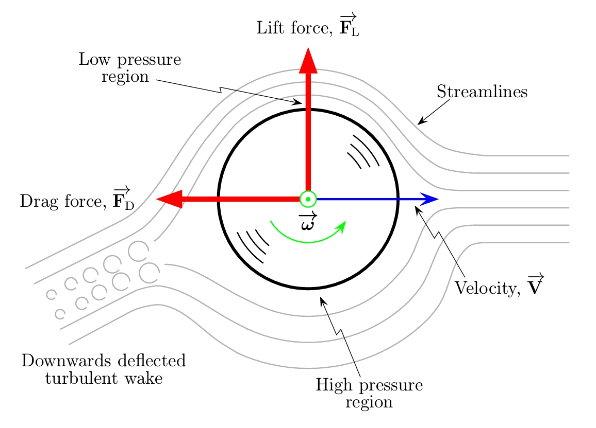

Dynamics and Physics
- Spin drives ball trajectory: implement attitude dynamics with full quaternion 6-DOF physics.
- Free flight with internal actuator: three reaction wheels.
- Magnus effect is complex: use published aerodynamic models.
State vector
- $\mathbf r$, position (inertial frame).
- $\mathbf v$, velocity (inertial frame).
- $\mathbf q$, quaternion from body frame to inertial frame.
- $\boldsymbol\omega$, angular rate (body frame).
- $\boldsymbol\Omega$, speed of each reaction wheel about its own axis.
Aerodynamics

Image source: Garry Robinson and Ian Robinson.
The aerodynamic model is based off a 2013 paper by Garry Robinson and Ian Robinson, The motion of an arbitrarily rotating spherical projectile and its application to ball games.
Lift uses the inertial spin $\boldsymbol\omega_i = R(\mathbf q)\,\boldsymbol\omega_b$.
Invertible and saturating, so a required $C_L$ maps to a unique spin rate. Aerodynamic torque is zero; spin decay over 0.45s is negligible.
Rigid-body dynamics with wheels
Axes stacked in $A$, inertias $I_w$. $-A\boldsymbol\tau_w$ is the reaction: wheel torque hits the ball with the opposite sign.
Sensors
White noise plus a bias drawn once per flight. The accelerometer senses specific force, so gravity does not appear.
It sees only the aerodynamic force, which does not depend on position.
Actuators
Three wheels, $I_w = 3\times10^{-6}\ \mathrm{kg\,m^2}$, saturated at $\pm 5\ \mathrm{N\,m}$.
| Quantity | Value | Source / note |
|---|---|---|
| Mass $m$ | 0.145kg | MLB regulation |
| Diameter | 0.074m | MLB regulation |
| Inertia $I$ | 0.4 m r² | solid sphere |
| Air density $\rho$ | 1.22kg/m³ | 16°C, sea level |
| Drag coefficient $C_D$ | 0.45 | constant over the Re band of a pitch |
| Max lift coefficient | 0.319 | saturating fit, spin-dependent |
| Release point | 16.8m, 1.8m | distance to plate, height |
| Nominal pitch | 90mph, 2200rpm | backspin about $-x$ |
| Wheel inertia $I_w$ | 3 × 10⁻⁶ kg m² | 3 orthogonal wheels |
| Torque limit | ±5N·m | idealised, not motor-sized |
| Gyro noise / bias | 1e-3 / 1e-4 rad/s | 1σ, bias drawn per flight |
| Accel noise / bias | 1e-3 / 1e-3 m/s² | 1σ, bias drawn per flight |
Aero model validation
Flown with spin and spinless; the difference is the induced break.
| Pitch | Flight [s] | Horizontal [in] | Vertical [in] | Published range |
|---|---|---|---|---|
| 4-seam fastball, 95mph / 2400rpm | 0.424 | 0.0 | +14.9 | rise 15 to 17in |
| Curveball, 80mph / 2500rpm | 0.504 | 0.0 | −15.5 | drop 10 to 15in |
| Slider, 85mph / 2400rpm | 0.474 | 14.9 | −0.0 | horiz 6 to 15in |
| Gyro spin, 85mph / 2400rpm | 0.474 | −0.8 | 0.0 | no movement (control case) |
Gyro spin producing no movement confirms the Magnus direction. $C_L$ ignores seam orientation, so two-seam is out of scope.
dynamics.pyState pack and unpack, quaternion kinematics and DCM, angular momentum, the state derivative, BallParams, and the drag and Magnus model with its $C_L$ fit and validation harness.imu.py6-DOF IMU with per-flight bias draws.run.pyScenario constants, DOP853 integration, terminal events, and the zero-order-hold GNC driver.DOP853 throughout: $\text{rtol}=10^{-9}$ for the torque-free baseline, $10^{-8}$ across the zero-order-hold steps of a closed-loop flight. Plate and ground are terminal events.

![Three-panel Monte Carlo figure. Left: catcher-view scatter of crossing points, with grey uncontrolled points scattered above and around the strike zone box and blue controlled points collapsed into a tight cluster on the target. Middle: a bundle of twenty trajectory pairs, the grey ones arriving high and the blue ones converging on the target line at the plate. Right: cumulative miss distributions, the controlled curve reaching one hundred percent below 0.12 metres while the uncontrolled curve stretches out past 0.6 metres.](assets/mc.webp)